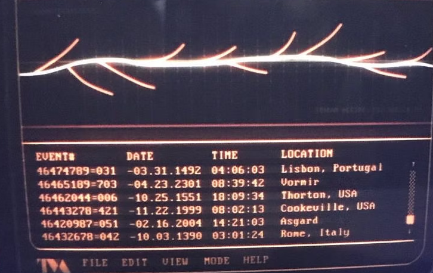

2-1: Branches

Let's make like Loki and break the timestream
We've explored moving forward and backward in time, but what about...sideways?
Yes, it's possible. With branches, we're able to explore alternate realities of our project while maintaining the integrity of the "prime timeline." Then, if we're happy with the changes we've made in one of our alternate branches, we can bring them into the main branch. This process is known as merging.
Branching Basics
Multiple git subcommands are used when working with branches, so we'll take this slow. To begin, let's run git branch in our gitdemo repository.
Not a lot to see, eh? We only have one branch right now: main. We'll soon change that.
Let's imagine we want to play with some ideas for our project in a new file named experiment.txt. But rather than mussing our current branch with our experiment, we'll create a new branch to do our work.
Strangely, the most common way to make a new branch is not with git branch. Instead, we use git checkout -b <branch_name>.
Wait, what?
Just trust me for a minute. Let's run it now.
git checkout -b experiment
Now, what does git branch show you?
If you're using our virtual machine or a Git-aware shell, your prompt will also change!
We are now in a different branch. Commits we make here will be isolated from the main branch. Let's prove it.
echo "Let's see what this does!" > experiment.txt
git add experiment.txt
git commit -m "Add experiment.txt"
Okay so we have a new commit. You can confirm it's there with git log if you like, but it's there. And our working tree is clean, with no unstaged changes. That means we're free to checkout to another branch. Let's go back to main.
git checkout main
git branch confirms we're in the right spot. And ls will show that...hey wait! Where's experiment.txt?
It's in another branch at the moment. Check git log.
It's like our experiment never happened! Use git checkout - to switch back to the previous branch. The - works kind of like the "Back" button on a television remote.
Running ls shows our experiment.txt is back, and git log once again shows our commit. We're in an alternate timeline!
Checking Out git checkout
The --help page for git checkout has a definition that is, well, utterly unhelpful.
Updates files in the working tree to match the version in the index or the specified tree. If no pathspec was given, git checkout will also update HEAD to set the specified branch as the current branch.
Thanks, makes perfect sense. Well, it would if you knew all of those Git internals, but this is an intro course and you shouldn't have to. So what does git checkout really do?
Given a branch or a commit hash, git checkout will update the repo to match the state at that commit. That might sound like git reset, but there's a very important difference: git checkout will not treat changes after a given commit (or in another branch) as though they exist.
Run git log and choose a commit hash, any commit hash. Then use it with git checkout.
First, you get a rather wordy message from Git. You'll notice that all changes after your target commit are just...gone. Not unstaged.
Oh no; did we just destroy the future?
Nah, read that message.
The important term here is the detached HEAD. You've essentially entered a safe bubble (or Mirror Universe, for Doctor Strange fans) that has no impact on any branch's real timeline. It's pretty odd, and I almost never do this, but it is possible. The important point here is that your future changes are treated as nonexistent here in this bubble universe. But don't worry; it's easy to get out. As the message tells you, git switch - will work just fine, but so will git checkout -. After doing exactly that, we're back in the present of the experiment branch, with all our work intact.
Now to switch back to main, we can no longer use git checkout -. That'll put us back in the detached HEAD, since that was our previous location. We'll have to specify the branch with git checkout main. And we're back in the primary timeline.
Let's remain here for the moment, and then talk about how to hang on to changes we're not ready to commit while moving between branches.